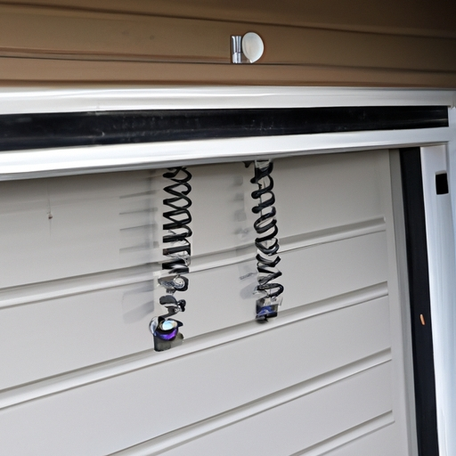

Function and importance of torsion springs in garage doors
Torsion springs play a vital role in garage doors. (Well), these springs are responsible for balancing the weight of the door, allowing it to open and close smoothly. Without torsion springs, your garage door would be extremely difficult to operate and could potentially cause accidents or injuries! (Oh no!)
The function of torsion springs is quite simple yet crucial. When you open your garage door, the torsion springs store mechanical energy by twisting tightly. This stored energy is then released when you close the door, helping it lower gently and preventing it from crashing down abruptly. In other words, torsion springs act as a counterbalance system that makes operating your garage door effortless and safe.
Now let's talk about the importance of these springs. (However), many people underestimate their significance until something goes wrong with them. If a torsion spring breaks or loses its tension, your garage door may become unbalanced and won't stay open or closed properly! (Oh dear!) This not only hampers convenience but also poses serious safety risks.
Without functional torsion springs, there is a possibility that your garage door might unexpectedly slam shut on someone or something below! (Yikes!) Additionally, trying to manually lift an unbalanced garage door can strain your muscles or even injure you! So ensuring the proper functioning of torsion springs is crucial for maintaining both convenience and safety.
In conclusion, torsion springs are indispensable components of garage doors. They allow for smooth operation by counterbalancing the weight of the door, preventing accidents and injuries. Understanding their function and importance helps us appreciate their role in our daily lives!
Signs of a broken or worn-out torsion spring in a garage door
Torsion springs are an integral component of garage doors, providing the necessary tension to lift and lower the heavy door smoothly. These springs undergo significant wear and tear over time due to constant use, which can ultimately lead to their breaking or wearing out. Identifying signs of a broken or worn-out torsion spring is crucial for maintaining the functionality and safety of your garage door.
One noticeable sign of a faulty torsion spring is when the garage door starts to operate unevenly. (Oh no!) Instead of moving up and down effortlessly, it may jerk or get stuck in certain spots while opening or closing. This irregular movement indicates that the torsion spring is struggling to provide the necessary force to support the weight of the door. Consequently, this issue must be addressed promptly to prevent further damage.
Another telltale sign (By golly!) of a broken or worn-out torsion spring is when you notice a visible gap between coils on either side of the spring. Normally, these coils should be tightly wound together without any gaps. However, with age and usage, the metal may weaken and break apart, leading to separation between coils. If you spot such gaps in your torsion spring, it's time for a replacement!
Additionally (Well now!), if you hear loud noises coming from your garage door during operation, it could indicate a problem with the torsion spring. A broken or worn-out spring often produces clanking or grinding sounds as it struggles to bear the load of the door. Ignoring these noises can exacerbate the issue and potentially cause further damage not only to the springs but also other parts of your garage door system.
In conclusion (To sum it all up), being aware of signs indicating a broken or worn-out torsion spring in your garage door is vital for its proper maintenance and safe operation! Keep an eye out for uneven movements, visible gaps between coils, and unusual noises during operation. Addressing these issues promptly can save you from more extensive repairs or even accidents. So, if you suspect any problems with your torsion springs, don't hesitate to call a professional garage door technician for assistance!
Safety precautions for garage door spring replacement
When it comes to replacing torsion springs on garage doors, safety precautions are of utmost importance. These springs are tightly wound and under immense tension, posing a significant risk of injury or even death if mishandled. Therefore, it is crucial to follow proper procedures and take necessary precautions during the replacement process.
Firstly, before attempting any work on torsion springs, make sure to disconnect power supply to the garage door opener. This will prevent any accidental activation (or triggering) of the door while working on the springs. Failure to do so could result in severe injuries from sudden movement or falling objects!
Next, always wear protective gear such as gloves and safety glasses when handling torsion springs. These items serve as a shield against potential flying debris or snapping coils that may occur during spring replacement. Neglecting this precaution can lead to serious eye injuries or hand lacerations.
Furthermore, never attempt to replace torsion springs alone! Having an extra pair of hands is essential for ensuring both your safety and efficient completion of the task. A partner can assist in holding tension while you remove or install the spring without strain (or excessive force).
Transition phrase: Moving forward, another critical aspect (or factor) is using appropriate tools for spring replacement. Utilizing improper tools increases the chances of accidents and damages (to yourself or property). Always use high-quality winding bars specifically designed for this purpose; they provide better grip and minimize slipping risks.
Additionally, regular maintenance checks should be conducted to identify signs of wear and tear in torsion springs. If you notice any visible cracks, rusting, or unusual noises during operation, it is vital to seek professional assistance promptly. Ignoring these warning signs can result in sudden failure of the spring system with potentially catastrophic consequences.
In conclusion, following strict safety precautions when replacing torsion springs for garage doors is imperative for personal well-being and preventing accidents. By disconnecting power supply, wearing protective gear, working with a partner, using appropriate tools, and conducting regular maintenance checks, you can mitigate risks effectively. Remember, safety should always be the top priority when dealing with such high-tension components!
Step-by-step guide to replacing torsion springs in a garage door
Replacing torsion springs in a garage door can be a daunting task for many homeowners. However, with the right tools and a step-by-step guide, this (daunting) task can become much more manageable. In this essay, I will provide you with an easy-to-understand (step-by-step) guide to replacing torsion springs in your garage door.
Firstly, it is important to note that safety should always be your top priority when working on any aspect of your garage door. Before starting the replacement process, make sure to wear protective gear such as goggles and gloves (!). Additionally, ensure that the power to the garage door opener is disconnected to avoid any accidents or injuries.
Now let's move on to the actual steps involved in replacing torsion springs. Begin by securing your garage door in its closed position using vise grips or locking pliers (transition phrase). This will prevent the door from unexpectedly opening while you are working on it.
Next, locate the winding cone at one end of the spring assembly. Use a winding bar and insert it into one of the holes on the cone. Apply force in the opposite direction of windings until all tension is released from the spring (!).
Once all tension has been released from both sides of the spring assembly, you can proceed to loosen and remove the set screws holding each spring onto the shaft. Be cautious not to lose these screws as they will be needed when installing new torsion springs later (!).
After removing the old springs, it's time to install new ones. Carefully slide each spring onto its respective side of the shaft and tighten their set screws securely using a wrench or socket (!). Ensure that they are evenly spaced apart and properly aligned before moving forward.
Lastly, you need to wind up each new torsion spring using a winding bar inserted into one of its holes on the cone. Apply force in line with windings until an appropriate amount of tension is achieved (!). Remember to wind both sides of the spring assembly equally to maintain balanced tension.
In conclusion, replacing torsion springs in a garage door may seem like a challenging task, but with the right guidance and precautions, it can be done successfully. By following this step-by-step guide and prioritizing safety, you can ensure a smooth and efficient replacement process. So go ahead and confidently tackle this project – your garage door will thank you later!
Common mistakes to avoid during garage door spring replacement
When it comes to replacing torsion springs for your garage door, there are some common mistakes that you should absolutely avoid. These errors can lead to dangerous situations and costly repairs, so it's important to be aware of them! Here are a few tips on what not to do when dealing with garage door spring replacement.
Firstly, one of the most common mistakes is attempting to replace the springs without proper knowledge or experience. (Seriously), this is not something you want to just guess your way through. Garage door springs are under extreme tension, and mishandling them can result in serious injuries or even death. Always consult a professional technician who knows what they're doing!
Another mistake people often make is using the wrong type or size of torsion spring for their specific garage door. Each door requires a specific kind of spring based on its weight and height, so using an incorrect one can lead to imbalances and potential damage to the entire garage door system. (Oh no!), don't make this error – always double-check the specifications before purchasing or installing new springs.
Furthermore, neglecting regular maintenance can also cause problems during garage door spring replacement. (By all means), you should keep your springs well-lubricated and inspect them periodically for any signs of wear or damage. This will help prevent sudden failures and extend the lifespan of your springs.
Lastly, rushing through the replacement process is another common mistake that many people tend to make. It's crucial to take your time and follow each step carefully while replacing torsion springs. (Well), if you rush things, you may overlook important details or improperly install the springs, which could lead to accidents later on.
In conclusion, when it comes to replacing torsion springs for your garage door, it's essential to avoid these common mistakes! Don't attempt this task without proper knowledge or experience; consult a professional instead! Make sure you're using the correct type and size of springs for your door, and don't forget to regularly maintain them. And most importantly, take your time during the replacement process – (seriously) safety should always be your top priority!
Benefits of professional assistance for garage door spring replacement
When it comes to torsion springs, professional assistance is essential for garage door spring replacement. (However), many homeowners may be tempted to tackle this task themselves in an attempt to save money. (Well), this can lead to disastrous consequences and end up costing more in the long run!
One of the benefits of seeking professional help for replacing torsion springs is their expertise. (You see), these professionals have years of experience working with garage doors and are familiar with the intricacies of torsion springs. They know how to safely handle these components, reducing the risk of accidents or injuries.
Another advantage is that professionals have access to the necessary tools and equipment. (And let me tell you), replacing torsion springs requires specific tools that most homeowners don't have readily available. By hiring a professional, you can ensure that the job is done efficiently and effectively.
Furthermore, professional assistance guarantees a thorough inspection of your entire garage door system. (I mean), they will not only replace the broken spring but also assess other components such as cables, rollers, and hinges. This comprehensive check ensures that any potential issues are identified early on and addressed appropriately.
Additionally, by opting for professional help, homeowners can save time and effort! (Can you believe it?) Replacing torsion springs can be a labor-intensive process that requires specific knowledge and skills. Hiring professionals frees up your time so you can focus on other important tasks while knowing that your garage door is in capable hands.
In conclusion,(to sum it all up) seeking professional assistance for garage door spring replacement offers numerous benefits including expert knowledge, access to specialized tools, thorough inspections, saved time and effort! Don't risk injury or further damage by attempting this complex task yourself; leave it to the professionals who can guarantee safe and efficient results.

Types of Garage Door Springs